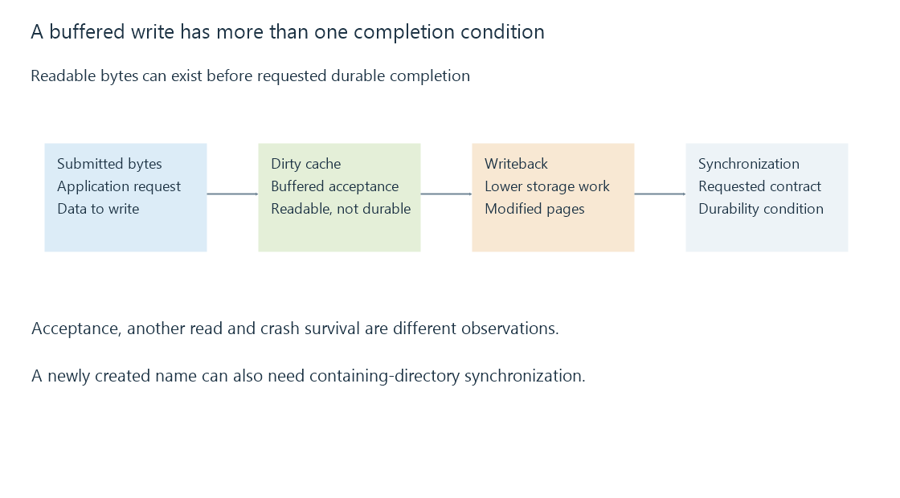

Storage caches: reusable reads and deferred writes
Storage caches retain reusable data or accept writes before slower storage work completes, so cache hits and durable writes have different meanings.
A storage cache holds data so an operation can avoid or defer slower work. The operating system can retain file pages in RAM. A NAS can cache data on the remote side. A drive can buffer commands and writes internally. Some SSDs also have a faster flash-writing area.
These are separate caches with different lifetimes and guarantees. Calling a second read “the disk speed” can therefore describe memory reuse instead of a disk transfer.
Cold reads and warm reads
The first uncached read must obtain data from the lower storage layers. A later read can use retained pages if they remain valid and have not been evicted.
An original model reads 100 MiB. Ninety MiB are hits taking 0.1 ms per one-MiB request; ten are misses taking 10 ms each. Serial request time is 90 × 0.1 + 10 × 10 = 109 ms. That result comes from the declared hit distribution, not a real benchmark.
A library can have a responsive second visit because artwork or database pages are now warm. Other activity can reclaim those pages. RAM used for cache is often reclaimable, so a large cache figure does not alone mean the server has run out of usable memory.
A buffered write has several states

- The application submits bytes.
- The operating system may copy them into memory and complete the buffered call.
- Background writeback sends modified pages to storage.
- A synchronization operation asks the storage stack to complete the durability work required by its contract.
Bytes can be readable after step two while still vulnerable to loss on power failure. “Another process can read it” and “it will survive a crash” answer different questions.
On Linux, fsync synchronizes file data and associated metadata as specified by the API. Making a newly created name durable can also require synchronization of its containing directory. Hardware and remote-server implementations must honor their part of the contract; a successful API call is not a substitute for understanding the configured storage arrangement.
Why a copy starts fast and slows down
If new writes arrive faster than lower storage can absorb them, cached dirty data accumulates. Once a limit is reached, the writer may have to wait.
For a simplified 2,000-MB staging capacity, 300 MB/s incoming writes and 100 MB/s draining writes, the cache fills at 200 MB/s and reaches capacity in ten seconds. Thereafter it cannot sustain the initial incoming rate indefinitely.
That model applies to a finite staging area. It is different from a reusable read cache: a read hit need not create later writeback. It is also different from an SSD's fast flash area, whose folding and reclamation behavior depends on that drive.
Caches in a shared workload
A large media read can compete with small frequently reused files for memory and storage service. Operating systems use policies to avoid retaining every streaming byte, but behavior depends on the workload and implementation.
For Emby, compare the access that matters: cold startup, a warmed library, sustained recording or synchronized application writes. Record whether a result includes cache reuse. Otherwise two accurate measurements can appear to contradict one another simply because they exercised different states.
See Also
- Storage latency: waiting for individual operations
- Solid-state drives: flash access, writes and endurance
- Temporary storage and RAM disks